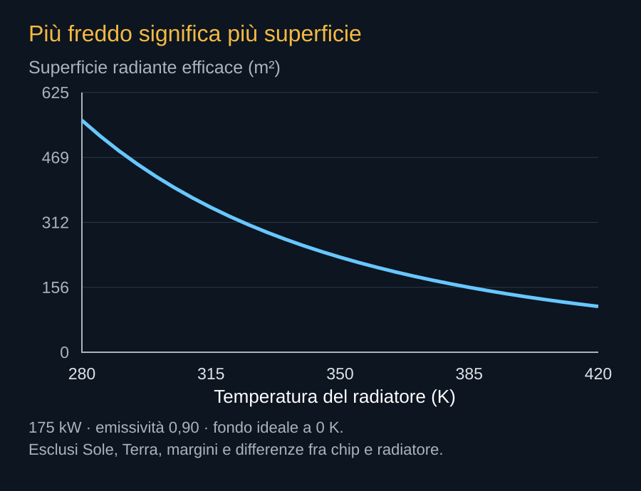

Una delle formule più utili per leggere Starmind lega potenza irradiata, superficie e temperatura. In un modello ideale P = εσAT⁴. L’emissività ε descrive quanto una superficie si avvicina all’emissione di un corpo nero; σ è la costante di Stefan–Boltzmann. La quarta potenza rende molto importante la temperatura. Per espellere la stessa energia, una superficie più fredda deve essere più grande.
Un conto trasparente
Consideriamo 175 kW di calore, emissività 0,90 e un radiatore che guardi interamente un fondo ideale a zero kelvin. A 300 K servono circa 423 m² di superficie radiante efficace; a 350 K circa 228 m²; a 400 K circa 134 m². Questi numeri sono calcolati qui per capire la scala. Non descrivono la temperatura ammessa dai chip o dai materiali di AI1.
La superficie efficace conteggia le facce che emettono realmente nelle condizioni del modello. Un pannello fisico di 100 m² potrebbe offrire due facce, ma ciascuna deve avere temperatura, rivestimento e vista appropriati. Il limite geometrico inferiore a 200 m² indicato da SpaceX non può essere confrontato direttamente con il risultato della formula senza conoscere queste definizioni.


Esplorare le ipotesi
Il laboratorio seguente permette di cambiare il carico, la temperatura del radiatore e l’emissività. Si può anche rappresentare un fondo con una temperatura radiativa equivalente. Il modello usa P = εσA(T⁴ − Tfondo⁴). Questa semplificazione non sostituisce i fattori di vista e l’assorbimento solare: una sorgente direzionale come il Sole non viene ricostruita da un unico fondo uniforme.
Laboratorio del radiatore
Modello ideale, superficie radiante efficace. Valori iniziali didattici; temperatura del radiatore, non del chip.
Il prezzo di una temperatura più alta
Scaldare il radiatore riduce la superficie richiesta, ma può rendere più difficile mantenere freddo il processore. Il calore deve passare da una regione più calda a una più fredda attraverso il circuito. Se si vuole espellere energia da una superficie molto calda mantenendo il chip più freddo, possono servire dispositivi aggiuntivi e lavoro elettrico. Il risparmio di area non è automaticamente un risparmio del sistema.
I materiali e i fluidi devono inoltre funzionare entro la stessa finestra. Temperatura, pressione, congelamento, stabilità dei rivestimenti e durata dei meccanismi pongono vincoli. La risposta va trovata nella combinazione fra computer e satellite, non scegliendo isolatamente la temperatura che produce il grafico più favorevole.
Margini e perdita di capacità
Un radiatore può degradarsi o perdere una parte del circuito. Un pannello può aprirsi in modo incompleto. Il progetto deve prevedere che cosa accada al payload: spegnimento, riduzione della potenza o prosecuzione parziale. Il margine termico diventa una risorsa commerciale, perché decide quanta capacità resti vendibile in una condizione non ideale.
Il modello consente di formulare domande concrete per le prime prove: quale temperatura venga misurata, quanta potenza sia sostenuta e quali superfici lavorino. Questi dati saranno più informativi di una fotografia spettacolare del satellite aperto. Mostreranno se geometria e lavoro informatico riescono a stare insieme nel tempo.
Fonti pubbliche e tracce
- NASA, stato dell’arte: controllo termico. Riferimento per bilancio termico, superfici radianti e trasferimento del calore. Grafici e dimensionamenti nel libro sono esempi semplificati, non una ricostruzione del progetto SpaceX.
- NASA, radiatori microvascolari e raffreddamento attivo. Scheda di ricerca del 2016: raffreddamento mediante fluido e superfici dispiegabili; precedente tecnologico, non componente di AI1.
- SpaceX, risposta alla FCC datata 16 settembre 2026. Documento primario scaricato e letto. Incontro del 14 settembre; inviluppi a pagina 8, rientro a pagina 9. Dichiarazioni e modelli del richiedente, non decisione della FCC.